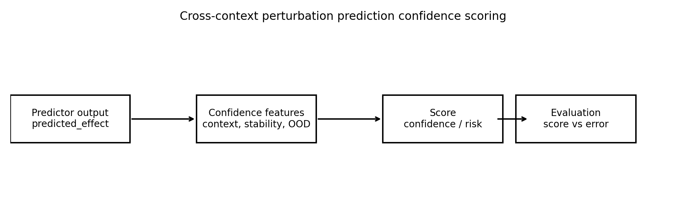
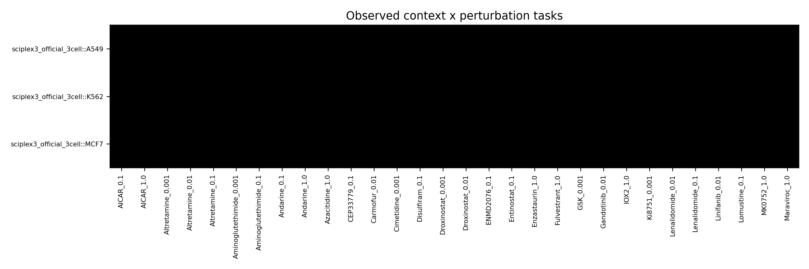
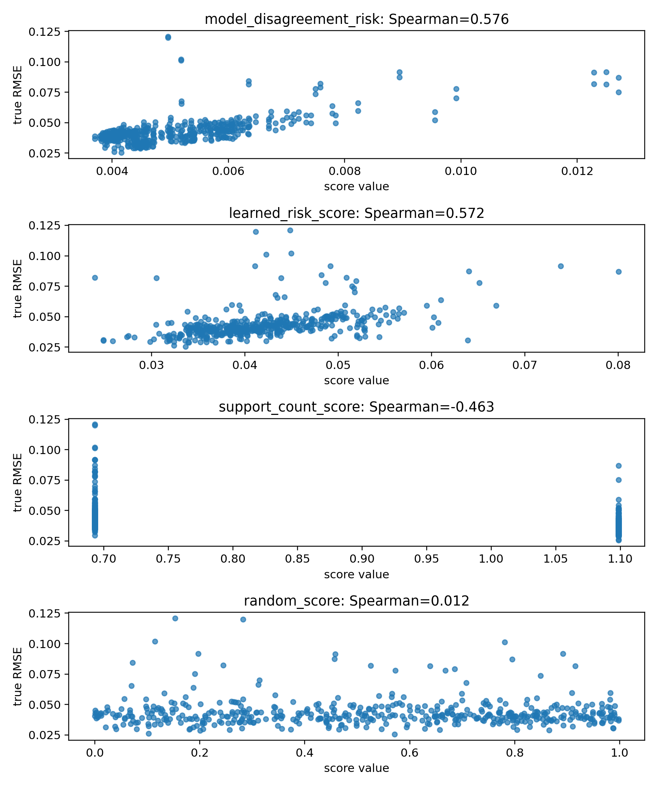
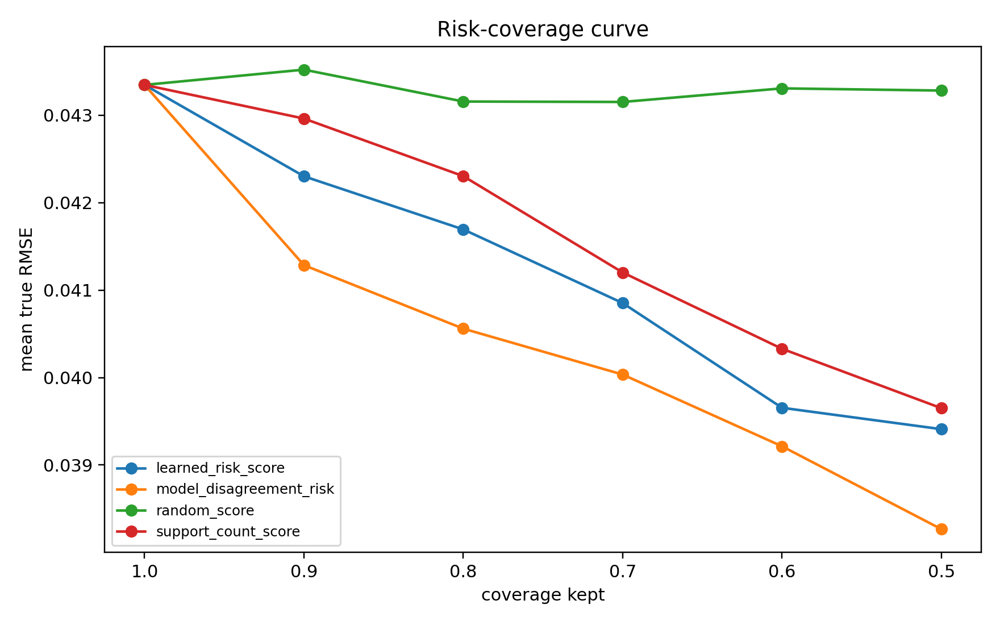
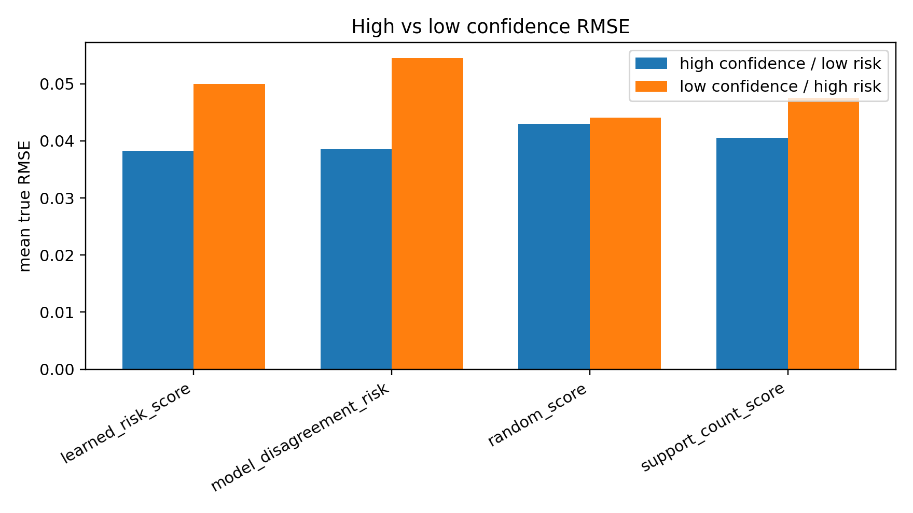
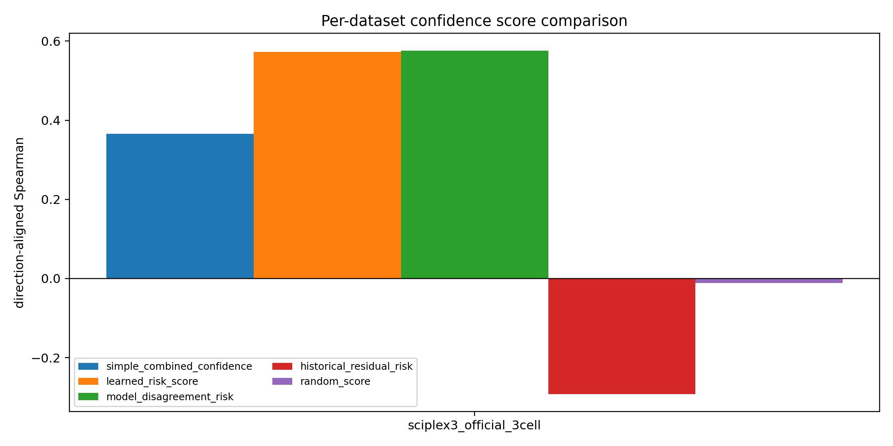
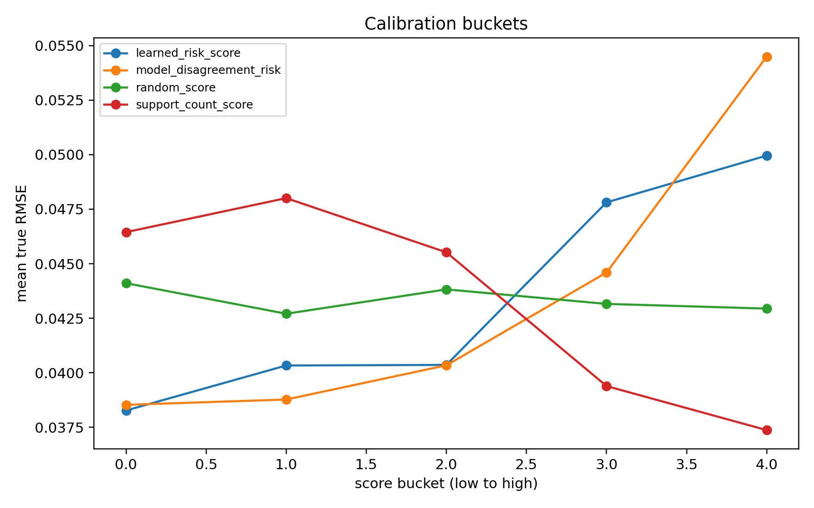
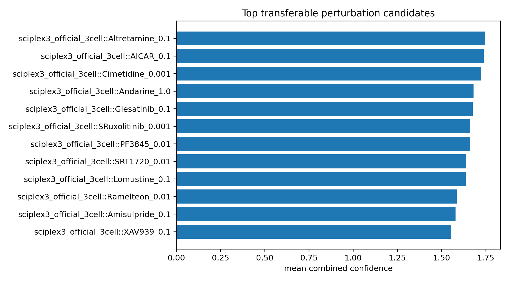

E13 官方 sciplex3 三细胞系 focused panel
把 A549、K562、MCF7 三个官方 sciplex3 文件合成一个 cell-line context 面板，验证官方 chemical drug-dose 外部任务风险信号。
任务
240
contexts
3
selected drug-dose
80
best rho
0.576
learned rho
0.572
1. 面板构建
| dataset | n_tasks | n_contexts | n_perturbations | n_raw_tasks | n_shared_perturbations | n_selected_perturbations | selection_rule |
|---|---|---|---|---|---|---|---|
| sciplex3_official_3cell | 240 | 3 | 80 | 2237 | 743 | 80 | top 80 shared perturbations by min_cells, total_cells |
2. 主结果
| dataset_name | simple_combined_confidence_aligned_rho | simple_combined_confidence_risk_cov_80_improve_pct | learned_risk_score_aligned_rho | learned_risk_score_risk_cov_80_improve_pct | model_disagreement_risk_aligned_rho | model_disagreement_risk_risk_cov_80_improve_pct |
|---|---|---|---|---|---|---|
| sciplex3_official_3cell | 0.365698 | 6.901895 | 0.572339 | 3.828445 | 0.57623 | 6.418622 |
3. Overall 信号排序
| score_name | score_type | n | direction_aligned_spearman | risk_cov_80_improve_pct | high_low_rmse_gap |
|---|---|---|---|---|---|
| model_disagreement_risk | risk | 480 | 0.576230 | 6.418622 | 0.015967 |
| learned_risk_score | risk | 480 | 0.572339 | 3.828445 | 0.011687 |
| support_count_score | confidence | 480 | 0.463493 | 2.398031 | 0.007006 |
| simple_combined_confidence | confidence | 480 | 0.365698 | 6.901895 | 0.015639 |
| random_score | confidence | 480 | -0.011629 | 0.382258 | 0.001166 |
| context_similarity_score | confidence | 480 | -0.014081 | 0.537559 | 0.000633 |
| perturbation_stability_score | confidence | 220 | -0.153238 | -0.120076 | -0.003295 |
| historical_residual_risk | risk | 480 | -0.292099 | -3.529172 | -0.003828 |
| prediction_magnitude_risk | risk | 480 | -0.292755 | 0.128309 | -0.001266 |
| ood_distance_risk | risk | 480 | -0.366869 | -3.962028 | -0.010836 |
4. 边界
本轮是 top-80 shared drug-dose focused panel。全量 743 shared drug-dose 需要先优化高维 feature 计算。
5. 图件








